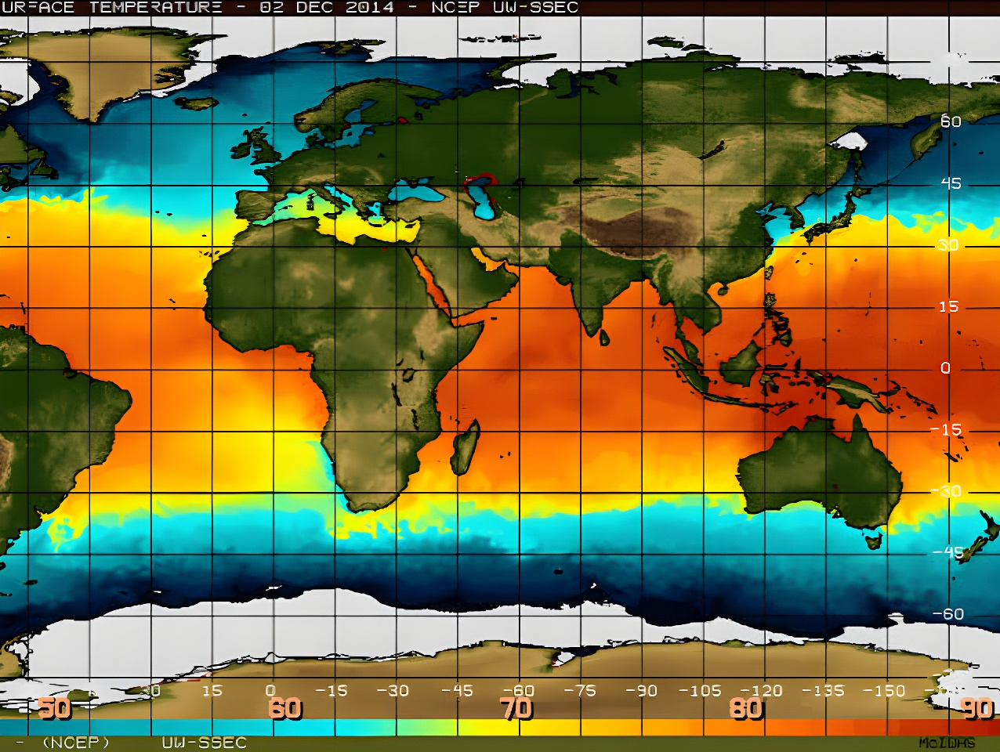

Tous les deux à sept ans, une langue d'eau anormalement chaude s'étend dans le Pacifique équatorial et vient dérégler les régimes de pluie sur plusieurs continents : c'est El Niño, la phase chaude du grand cycle naturel ENSO. Après une brève Niña fin 2025, la NOAA a officiellement acté son retour en juin 2026, et les grands centres de prévision (NOAA, ECMWF, BOM) évoquent désormais un épisode qui pourrait compter parmi les plus intenses jamais mesurés — avec des répercussions attendues sur les températures mondiales, les récoltes et les saisons cycloniques jusqu'en 2027.
Le nom vient de pêcheurs péruviens et équatoriens qui, dès le XIXe siècle, remarquaient que certaines années les eaux côtières se réchauffaient anormalement autour de Noël, faisant fuir les bancs de poissons : ils l'ont baptisé « El Niño », en référence à l'Enfant Jésus. Les scientifiques ont ensuite découvert que ce réchauffement local n'était que la partie visible d'un phénomène bien plus vaste, couplant l'océan Pacifique et l'atmosphère à l'échelle de la planète : l'ENSO (El Niño-Southern Oscillation). Selon la définition retenue par la NOAA, un épisode El Niño est déclaré lorsque la température de surface de l'eau dépasse la moyenne d'au moins 0,5 °C dans la zone dite « Niño 3.4 » (au centre du Pacifique équatorial), sur une moyenne glissante de trois mois consécutifs.
En temps normal, les alizés soufflent d'est en ouest le long de l'équateur, entraînant les eaux chaudes de surface vers l'Indonésie et l'Australie et provoquant, au large du Pérou, une remontée d'eaux froides et riches en nutriments (upwelling) : c'est la circulation de Walker. Lors d'un épisode El Niño, ces vents s'affaiblissent, voire s'inversent : la nappe d'eau chaude glisse vers l'est du Pacifique, la branche ascendante de la circulation de Walker se déplace avec elle, et l'upwelling péruvien s'interrompt. Ce simple basculement suffit à réorganiser les régimes de pluie sur une grande partie du globe.
Chaque épisode a sa physionomie propre, mais certains schémas reviennent régulièrement : sécheresses en Amazonie, en Indonésie, en Australie et dans certaines régions d'Afrique australe, mousson indienne perturbée, tandis que le Pérou, l'Équateur, le sud des États-Unis ou la Corne de l'Afrique reçoivent au contraire des pluies excédentaires, parfois torrentielles. El Niño a également tendance à réduire l'activité cyclonique dans l'Atlantique Nord tout en la renforçant dans le Pacifique. Enfin, la chaleur qu'il libère dans l'atmosphère agit avec un décalage de plusieurs mois : c'est souvent l'année suivant le pic de l'épisode qui bat les records de température mondiale — l'épisode de 2023-2024 a ainsi contribué à faire de 2023 la deuxième année la plus chaude jamais enregistrée, puis de 2024 la première.
L'épisode le plus intense connu à ce jour, avec une anomalie estimée à +3,5 °C. Il aurait contribué à des sécheresses et des famines dévastatrices en Asie, en Afrique et en Amérique latine.
L'épisode fait s'effondrer la pêcherie péruvienne d'anchois, alors la plus importante au monde, révélant les enjeux économiques du phénomène.
L'un des épisodes les plus étudiés du XXe siècle : anomalie autour de +2,4 °C, coût mondial réévalué depuis à 5 700 milliards de dollars sur les cinq années suivantes.
Record de l'ère satellite, avec une anomalie proche de +2,6 °C, à l'origine de sécheresses et d'inondations sur plusieurs continents.
Dernier épisode en date, associé aux deux années les plus chaudes jamais enregistrées à l'échelle mondiale.
Après une courte Niña, la NOAA déclare un nouvel épisode El Niño en juin ; les prévisionnistes évoquent un possible record depuis le début des relevés en 1950.
Après une phase La Niña brève, achevée au début de l'année, le Centre de prédiction climatique de la NOAA a émis une alerte El Niño (« El Niño Advisory ») en juin 2026. Dès août, l'Organisation météorologique mondiale jugeait le phénomène « fermement établi et en cours de renforcement », avec une probabilité proche de 100 % qu'il se maintienne jusqu'au début 2027, un pic étant attendu vers la fin de l'année 2026. Selon la NOAA, il y aurait 81 % de chances que ce pic atteigne la catégorie « très forte », ce qui en ferait l'un des épisodes les plus intenses depuis le début des relevés modernes, en 1950.
Certains modèles, notamment ceux du centre européen ECMWF, ont même évoqué au printemps la possibilité qu'un « super El Niño » fasse grimper l'anomalie de température au-delà de +3 °C dans la zone Niño 3.4 — de quoi dépasser le record de 2015-2016 et se rapprocher de l'épisode historique de 1877-1878. Ces scénarios les plus extrêmes, formulés plusieurs mois à l'avance, restent toutefois entourés d'incertitude : les prévisions de printemps sont réputées moins fiables, et plusieurs climatologues appellent à attendre l'automne pour confirmer l'ampleur réelle de l'épisode.
« On s'oriente vers un épisode modéré à fort, voire potentiellement sans précédent. »
— Carlo Buontempo, directeur de l'observatoire européen Copernicus, propos rapportés par l'AFP (2026)Au-delà de la météo, c'est la facture économique qui inquiète les chercheurs. Une étude de l'Université Dartmouth (2023) a réévalué à la hausse le coût mondial d'El Niño : en moyenne 3 400 milliards de dollars par épisode, avec un ralentissement de la croissance qui se prolonge plus de cinq ans après le pic. L'épisode de 1997-1998 aurait ainsi coûté 5 700 milliards de dollars — cent fois l'estimation initiale de la Banque mondiale — et celui de 1982-1983, 4 100 milliards. Ce sont les pays tropicaux les plus pauvres, comme le Pérou ou l'Indonésie, qui encaissent la part la plus lourde de la facture.
| Épisode | Anomalie (pic) | Impact marquant |
|---|---|---|
| 1877-1878 | ≈ +3,5 °C | Sécheresses et famines historiques |
| 1982-1983 | ≈ +2,1 °C | 4 100 Md$ de pertes économiques |
| 1997-1998 | ≈ +2,4 °C | 5 700 Md$ de pertes économiques |
| 2015-2016 | ≈ +2,6 °C | Record de l'ère satellite |
| 2026 | en cours | 81 % de probabilité d'un épisode « très fort » (NOAA) |
Malgré des décennies de recherche, des satellites toujours plus précis et des modèles couplés océan-atmosphère de plus en plus sophistiqués, l'intensité exacte d'un épisode El Niño reste difficile à anticiper plusieurs mois à l'avance — les révisions à la baisse ou à la hausse des prévisions 2026 en sont la meilleure preuve. Ce que les études récentes montrent en revanche assez clairement, c'est que le réchauffement climatique tend à amplifier les impacts d'El Niño et à allonger la cicatrice économique qu'il laisse derrière lui. Quelle que soit son ampleur finale, l'épisode de 2026 rappelle qu'un simple basculement de température sur une bande d'océan suffit à faire vaciller les récoltes, les prix alimentaires et les températures d'un bout à l'autre de la planète — jusqu'à ce que le cycle, inévitablement, bascule à nouveau vers son pendant froid, La Niña.